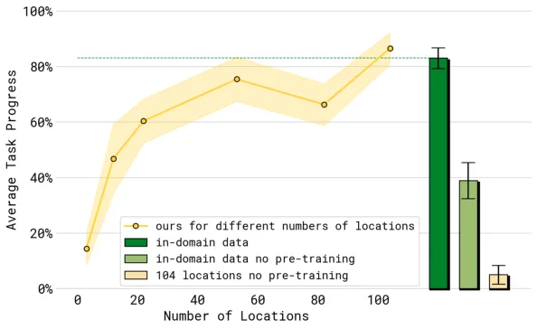
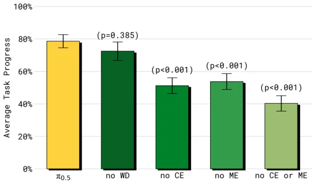
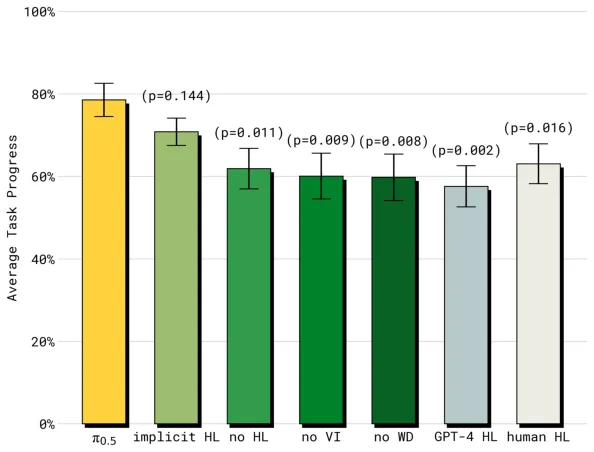

💡速记层 · 思想 / 逻辑 / 方法
默认读完就走的一层——只讲思想、逻辑、方法；效果只作验证。要核对原文/钻细节再看下面的「深读层」。
- 长程家务任务的场景组合爆炸，在目标移动机器人上穷举采数据不可行。
- 但人应付新环境靠的是迁移：别处学的技能 + 书本/口头的知识 + 一点当前经验。
- VLA 的关键能力是把图像/文字/动作统一成 token 序列 → 模仿学习退化成"下一 token 预测"。
- 既然如此，任何能写成序列的数据都能拼进同一模型联合训练（co-training）。
- 再让同一个模型先预测"该干哪个子任务"、再据此出动作（类 chain-of-thought 的两级推理），高层借网页/语言知识、低层借别的机器人动作数据。
机器人在训练集外的真实新家能端到端扫厨房/收卧室；而去掉跨本体数据就崩、去掉口头指令就明显变弱——这些消融反过来证明了"迁移"这个思想是对的，也指出哪类数据在负责什么。
想看具体数字（点开）
- 97.6% 训练样本不来自移动操作机器人（直采移动数据仅 ~2.4%，约 400h）。
- 104 个训练场景的模型 ≈ "把测试家纳入训练"的对照上界。
- 完整 π0.5 的高层推理甚至超过人类 oracle；显著优于 π0 / π0-FAST+Flow。
Track A（移动操作 VLA）直接命中：这正是"用异构数据让移动操作 VLA 泛化到新环境"的范式样本，co-training 配方与两级推理可直接借鉴。Track B（足式控制算法）不相关——本文不涉及 locomotion/底层控制。故按框架深读，证据细节见下。
◆核心观点 · 证据
每条 = 中文论点 + 📍页/节 + 🔤逐字原文(Ctrl-F 锚点) + 🀄译文 + 💡解读。点开原文即可最短路径核对。
While vision-language-action (VLA) models have demonstrated impressive results for end-to-end robot control, it remains an open question how far such models can generalize in the wild.
We describe π0.5, a new model based on π0 that uses co-training on heterogeneous tasks to enable broad generalization. π0.5 uses data from multiple robots, high-level semantic prediction, web data, and other sources to enable broadly generalizable real-world robotic manipulation.
The overwhelming majority of training examples provided to π0.5 (97.6% during the first training phase) do not come from mobile manipulators performing household tasks, but from these other sources, such as other robots or data from the web.

the model first predicts the semantic subtask, inferring the behavior that is appropriate to perform next based on the task structure and the semantics of the scene, and then predicts the low-level robot action chunk based on this subtask.
Our model is therefore trained to predict actions both through autoregressive sampling of tokens (using the FAST tokenizer) and iterative integration of the flow field, combining the best of both worlds. We use the attention matrix to ensure that the different action representations do not attend to each other.
To our knowledge, our work is the first to demonstrate an end-to-end learning-enabled robotic system that can perform long-horizon and dexterous manipulation skills, such as cleaning a kitchen or bedroom, in entirely new homes.

This control attains similar performance as the final 104-location model, suggesting that our co-training recipe effectively enables broad generalization, reaching similar performance to a model trained on the test environment.

excluding either of the two cross-embodiment data sources (ME and CE) significantly degrades performance, indicating that π0.5 benefits considerably from cross-embodiment transfer, from both other environments (ME) and other tasks (CE).

The full π0.5 model performs the best, and outperforms even the human HL “oracle” baseline. Perhaps surprisingly, the second best model is the implicit HL ablation, which does not perform any high-level inference, but includes the full data mixture, i.e. also subtask prediction, in training.
the relatively small verbal instruction dataset, which only constitutes about 11% of the high-level mobile manipulation examples, is critical to strong performance as the no VI ablation is significantly weaker.
⎘开源状态
⚠️ 论文正文发布时（2025-04）仅有项目博客/视频；但 2025-09 Physical Intelligence 已在 openpi 正式开源 π0.5 的代码与权重。下表为截至当前的最新状态。
- 代码
- 已开源 github.com/Physical-Intelligence/openpi（Apache-2.0；训练/微调/推理；JAX，另有 PyTorch 端口）
- 权重
- 已开源
pi05_base/pi05_droid/pi05_libero三个 checkpoint；HuggingFace 端口lerobot/pi05_base - 数据
- 未公开 ~400h 移动操作及多本体自采数据未释出（仅其中 OXE 子集本就公开）
openpi 的开源版仅支持 flow matching head 做 π0.5 的训练与推理——即论文里「预训练用 FAST 离散 token」那条动作通路未包含在开放实现中，复现完整混合配方需自行补齐。
[Sept 2025] We released pi05, an upgraded version of pi0 with better open-world generalization.
⚖批判 · 评级
真·标志性结果：首个端到端在全新真实家庭完成 10–15 分钟长程灵巧任务的系统。「异构 co-training＞蛮力扩数据」这一思想用受控消融钉死，且揭示了「子任务预测数据本身即在塑造表征」（implicit HL 次优）的反直觉结论。代码与权重已在 openpi 开源，社区杠杆大。
① 评测高度自建：rubric 为按步打分的「任务进度」而非二元成功，每任务约 10 trials，绝对成功率与失败模式披露有限。② 主结果靠定性「to our knowledge first」+ mock-home 定量，真实家庭仅 3 个。③ ~400h 自采移动/多本体数据未公开，完整复现仍受限（虽有开源权重可直接用/微调）。④ 自承高层会被分心（反复开关抽屉）、部分可观测与陌生把手仍失败。
评级：Breakthrough 尽管建立在 π0/FAST/flow matching 之上，但「开放世界泛化到全新家庭的长程操作」是该领域一次真正的能力跃迁。